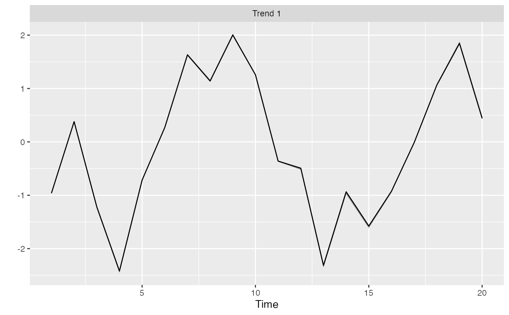

Plot the trends from a DFA
plot_trends( rotated_modelfit, years = NULL, highlight_outliers = FALSE, threshold = 0.01 )
| rotated_modelfit | Output from |
|---|---|
| years | Optional numeric vector of years for the plot |
| highlight_outliers | Logical. Should trend events
that exceed the probability of occurring with a normal distribution as
defined by |
| threshold | A probability threshold below which to flag trend events as extreme. Defaults to 0.01 |
plot_loadings fit_dfa rotate_trends
set.seed(1) s <- sim_dfa(num_trends = 1) m <- fit_dfa(y = s$y_sim, num_trends = 1, iter = 50, chains = 1)#> #> SAMPLING FOR MODEL 'dfa' NOW (CHAIN 1). #> Chain 1: #> Chain 1: Gradient evaluation took 3.7e-05 seconds #> Chain 1: 1000 transitions using 10 leapfrog steps per transition would take 0.37 seconds. #> Chain 1: Adjust your expectations accordingly! #> Chain 1: #> Chain 1: #> Chain 1: WARNING: There aren't enough warmup iterations to fit the #> Chain 1: three stages of adaptation as currently configured. #> Chain 1: Reducing each adaptation stage to 15%/75%/10% of #> Chain 1: the given number of warmup iterations: #> Chain 1: init_buffer = 3 #> Chain 1: adapt_window = 20 #> Chain 1: term_buffer = 2 #> Chain 1: #> Chain 1: Iteration: 1 / 50 [ 2%] (Warmup) #> Chain 1: Iteration: 5 / 50 [ 10%] (Warmup) #> Chain 1: Iteration: 10 / 50 [ 20%] (Warmup) #> Chain 1: Iteration: 15 / 50 [ 30%] (Warmup) #> Chain 1: Iteration: 20 / 50 [ 40%] (Warmup) #> Chain 1: Iteration: 25 / 50 [ 50%] (Warmup) #> Chain 1: Iteration: 26 / 50 [ 52%] (Sampling) #> Chain 1: Iteration: 30 / 50 [ 60%] (Sampling) #> Chain 1: Iteration: 35 / 50 [ 70%] (Sampling) #> Chain 1: Iteration: 40 / 50 [ 80%] (Sampling) #> Chain 1: Iteration: 45 / 50 [ 90%] (Sampling) #> Chain 1: Iteration: 50 / 50 [100%] (Sampling) #> Chain 1: #> Chain 1: Elapsed Time: 0.002337 seconds (Warm-up) #> Chain 1: 0.007267 seconds (Sampling) #> Chain 1: 0.009604 seconds (Total) #> Chain 1:#> Warning: There were 1 chains where the estimated Bayesian Fraction of Missing Information was low. See #> http://mc-stan.org/misc/warnings.html#bfmi-low#> Warning: Examine the pairs() plot to diagnose sampling problems#> Warning: The largest R-hat is 2.1, indicating chains have not mixed. #> Running the chains for more iterations may help. See #> http://mc-stan.org/misc/warnings.html#r-hat#> Warning: Bulk Effective Samples Size (ESS) is too low, indicating posterior means and medians may be unreliable. #> Running the chains for more iterations may help. See #> http://mc-stan.org/misc/warnings.html#bulk-ess#> Warning: Tail Effective Samples Size (ESS) is too low, indicating posterior variances and tail quantiles may be unreliable. #> Running the chains for more iterations may help. See #> http://mc-stan.org/misc/warnings.html#tail-ess#> Inference for the input samples (1 chains: each with iter = 25; warmup = 12): #> #> Q5 Q50 Q95 Mean SD Rhat Bulk_ESS Tail_ESS #> x[1,1] 1.6 1.6 1.6 1.6 0.0 1.87 4 13 #> x[1,2] -0.6 -0.6 -0.6 -0.6 0.0 2.06 9 13 #> x[1,3] 2.1 2.1 2.1 2.1 0.0 1.71 5 13 #> x[1,4] 4.1 4.1 4.1 4.1 0.0 1.58 4 13 #> x[1,5] 1.2 1.2 1.2 1.2 0.0 1.47 5 13 #> x[1,6] -0.4 -0.4 -0.4 -0.4 0.0 2.06 4 13 #> x[1,7] -2.8 -2.7 -2.7 -2.7 0.0 2.06 4 13 #> x[1,8] -1.9 -1.9 -1.9 -1.9 0.0 2.06 3 13 #> x[1,9] -3.4 -3.4 -3.3 -3.4 0.0 2.06 4 13 #> x[1,10] -2.1 -2.1 -2.1 -2.1 0.0 2.06 4 13 #> x[1,11] 0.6 0.6 0.6 0.6 0.0 1.09 7 13 #> x[1,12] 0.8 0.8 0.9 0.8 0.0 1.71 4 13 #> x[1,13] 3.9 3.9 3.9 3.9 0.0 2.06 4 13 #> x[1,14] 1.6 1.6 1.6 1.6 0.0 2.06 4 13 #> x[1,15] 2.7 2.7 2.7 2.7 0.0 2.06 4 13 #> x[1,16] 1.6 1.6 1.6 1.6 0.0 1.87 5 13 #> x[1,17] 0.0 0.0 0.0 0.0 0.0 1.03 12 13 #> x[1,18] -1.8 -1.8 -1.8 -1.8 0.0 2.06 4 13 #> x[1,19] -3.1 -3.1 -3.1 -3.1 0.0 2.06 4 13 #> x[1,20] -0.8 -0.8 -0.7 -0.8 0.0 2.06 4 13 #> Z[1,1] 0.7 0.7 0.7 0.7 0.0 1.87 4 13 #> Z[2,1] -5.0 -4.5 -4.4 -4.7 0.3 2.06 3 13 #> Z[3,1] 23.7 24.2 25.6 24.5 0.8 2.06 3 13 #> Z[4,1] 11.5 11.8 12.9 12.1 0.6 2.06 3 13 #> log_lik[1] -1.6 -1.6 -1.6 -1.6 0.0 2.06 3 13 #> log_lik[2] -14.4 -10.6 -9.8 -11.7 2.0 2.06 3 13 #> log_lik[3] -291.9 -221.9 -204.6 -241.0 38.2 2.06 3 13 #> log_lik[4] -78.8 -56.7 -52.1 -62.9 11.7 2.06 3 13 #> log_lik[5] -2.0 -2.0 -2.0 -2.0 0.0 1.71 5 13 #> log_lik[6] -5.8 -4.9 -4.7 -5.1 0.5 2.06 3 13 #> log_lik[7] -52.5 -42.3 -39.2 -44.8 5.7 2.06 3 13 #> log_lik[8] -8.3 -6.4 -5.9 -6.9 1.0 2.06 3 13 #> log_lik[9] -1.6 -1.6 -1.5 -1.6 0.0 2.06 3 13 #> log_lik[10] -18.4 -13.0 -12.1 -14.6 2.8 2.06 3 13 #> log_lik[11] -439.0 -329.8 -304.4 -360.3 59.2 2.06 3 13 #> log_lik[12] -142.1 -102.2 -94.4 -113.6 21.0 2.06 3 13 #> log_lik[13] -2.1 -2.1 -2.1 -2.1 0.0 2.06 3 13 #> log_lik[14] -63.3 -43.3 -39.7 -49.1 10.4 2.06 3 13 #> log_lik[15] -1829.9 -1387.4 -1282.4 -1509.5 240.6 2.06 3 13 #> log_lik[16] -499.6 -356.8 -328.5 -397.4 75.1 2.06 3 13 #> log_lik[17] -1.6 -1.6 -1.5 -1.6 0.0 2.06 3 13 #> log_lik[18] -8.5 -6.4 -6.1 -7.0 1.1 2.06 3 13 #> log_lik[19] -166.6 -126.7 -118.5 -138.2 21.2 2.06 3 13 #> log_lik[20] -45.2 -32.6 -30.5 -36.3 6.5 2.06 3 13 #> log_lik[21] -1.6 -1.6 -1.5 -1.5 0.0 2.06 3 13 #> log_lik[22] -2.6 -2.3 -2.2 -2.4 0.2 2.06 3 13 #> log_lik[23] -27.6 -20.7 -18.4 -22.4 4.0 2.06 3 13 #> log_lik[24] -6.1 -4.6 -4.2 -5.0 0.8 2.06 3 13 #> log_lik[25] -2.1 -2.0 -2.0 -2.0 0.0 2.06 3 13 #> log_lik[26] -37.6 -26.4 -24.2 -29.6 5.9 2.06 3 13 #> log_lik[27] -850.4 -638.2 -583.2 -695.3 117.0 2.06 3 13 #> log_lik[28] -215.4 -151.5 -137.8 -169.4 34.0 2.06 3 13 #> log_lik[29] -2.2 -2.2 -2.2 -2.2 0.0 2.06 3 13 #> log_lik[30] -17.9 -12.7 -11.6 -14.2 2.8 2.06 3 13 #> log_lik[31] -433.7 -324.4 -296.0 -353.9 60.4 2.06 3 13 #> log_lik[32] -104.3 -72.9 -66.2 -81.7 16.7 2.06 3 13 #> log_lik[33] -3.1 -2.9 -2.9 -3.0 0.1 2.06 3 13 #> log_lik[34] -45.9 -31.6 -28.8 -35.7 7.6 2.06 3 13 #> log_lik[35] -1276.1 -963.1 -882.0 -1047.7 173.0 2.06 3 13 #> log_lik[36] -323.1 -228.3 -208.0 -254.9 50.5 2.06 3 13 #> log_lik[37] -1.7 -1.7 -1.7 -1.7 0.0 2.06 3 13 #> log_lik[38] -20.0 -14.3 -13.1 -15.9 3.0 2.06 3 13 #> log_lik[39] -475.6 -360.9 -329.2 -391.3 64.2 2.06 3 13 #> log_lik[40] -133.7 -96.0 -87.5 -106.5 20.3 2.06 3 13 #> log_lik[41] -1.7 -1.6 -1.6 -1.6 0.0 2.06 3 13 #> log_lik[42] -2.9 -2.5 -2.5 -2.7 0.2 2.06 3 13 #> log_lik[43] -45.5 -34.6 -32.6 -37.7 5.7 2.06 3 13 #> log_lik[44] -12.8 -9.5 -9.0 -10.5 1.7 2.06 3 13 #> log_lik[45] -1.6 -1.5 -1.5 -1.5 0.0 2.06 3 13 #> log_lik[46] -2.8 -2.3 -2.3 -2.5 0.2 2.06 3 13 #> log_lik[47] -80.8 -60.1 -56.2 -66.1 10.9 2.06 3 13 #> log_lik[48] -23.6 -17.0 -15.9 -18.9 3.4 2.06 3 13 #> log_lik[49] -4.0 -3.7 -3.6 -3.8 0.2 2.06 3 13 #> log_lik[50] -69.3 -48.1 -44.2 -54.3 11.1 2.06 3 13 #> log_lik[51] -1736.0 -1311.5 -1210.5 -1428.9 231.3 2.06 3 13 #> log_lik[52] -432.1 -305.1 -280.0 -341.3 66.9 2.06 3 13 #> log_lik[53] -1.7 -1.7 -1.6 -1.7 0.0 2.06 3 13 #> log_lik[54] -14.9 -10.7 -10.0 -12.0 2.1 2.06 3 13 #> log_lik[55] -298.2 -221.9 -205.6 -243.9 41.2 2.06 3 13 #> log_lik[56] -73.2 -51.1 -47.2 -57.6 11.5 2.06 3 13 #> log_lik[57] -3.1 -2.9 -2.8 -2.9 0.1 2.06 3 13 #> log_lik[58] -34.1 -23.8 -22.0 -26.8 5.4 2.06 3 13 #> log_lik[59] -824.3 -618.2 -571.2 -676.2 111.7 2.06 3 13 #> log_lik[60] -198.7 -139.0 -127.7 -156.2 31.3 2.06 3 13 #> log_lik[61] -1.8 -1.8 -1.7 -1.8 0.0 2.06 3 13 #> log_lik[62] -18.4 -13.6 -12.8 -15.0 2.5 2.06 3 13 #> log_lik[63] -282.7 -211.4 -196.9 -232.3 38.2 2.06 3 13 #> log_lik[64] -69.0 -48.4 -44.9 -54.6 10.7 2.06 3 13 #> log_lik[65] -1.6 -1.6 -1.5 -1.5 0.0 2.06 3 13 #> log_lik[66] -1.6 -1.6 -1.5 -1.6 0.0 2.06 4 13 #> log_lik[67] -1.8 -1.7 -1.7 -1.7 0.0 1.19 6 13 #> log_lik[68] -1.6 -1.5 -1.5 -1.5 0.0 2.06 3 13 #> log_lik[69] -1.6 -1.6 -1.5 -1.6 0.0 2.06 3 13 #> log_lik[70] -15.6 -11.4 -10.4 -12.6 2.3 2.06 3 13 #> log_lik[71] -334.5 -255.4 -230.1 -274.9 44.8 2.06 3 13 #> log_lik[72] -104.6 -76.2 -68.9 -83.6 15.4 2.06 3 13 #> log_lik[73] -1.6 -1.6 -1.6 -1.6 0.0 2.06 3 13 #> log_lik[74] -35.1 -24.1 -21.7 -27.2 5.8 2.06 3 13 #> log_lik[75] -1049.5 -795.8 -721.0 -860.4 142.0 2.06 3 13 #> log_lik[76] -294.2 -210.7 -190.6 -233.1 44.9 2.06 3 13 #> log_lik[77] -1.7 -1.6 -1.6 -1.6 0.0 2.06 3 13 #> log_lik[78] -3.0 -2.5 -2.4 -2.7 0.3 2.06 3 13 #> log_lik[79] -58.8 -43.5 -37.0 -46.6 9.2 2.06 3 13 #> log_lik[80] -25.0 -18.4 -16.2 -19.9 3.8 2.06 3 13 #> psi[1] 2.8 2.8 2.8 2.8 0.0 0.96 13 13 #> xstar[1,1] -2.5 -2.1 -1.3 -1.9 0.4 0.96 13 13 #> sigma[1] 1.7 1.9 1.9 1.8 0.1 2.06 3 13 #> lp__ -15026.1 -11367.0 -10483.1 -12369.8 1991.2 2.06 3 13 #> #> For each parameter, Bulk_ESS and Tail_ESS are crude measures of #> effective sample size for bulk and tail quantities respectively (an ESS > 100 #> per chain is considered good), and Rhat is the potential scale reduction #> factor on rank normalized split chains (at convergence, Rhat <= 1.05).